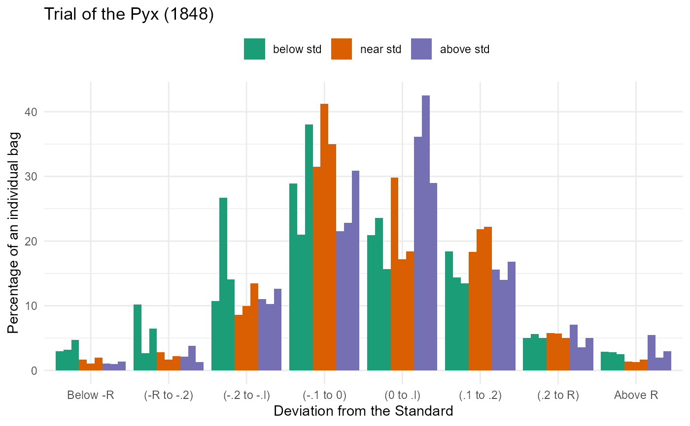

Stigler (1997, 1999) recounts the history of one of the oldest continuous schemes of sampling inspection carried out by the Royal Mint in London for about eight centuries. The Trial of the Pyx was the final, ceremonial stage in a process designed to ensure that the weight and quality of gold and silver coins from the mint met the standards for coinage.
At regular intervals, coins would be taken from production and deposited into a box called the Pyx. When a Trial of the Pyx was called, the contents of the Pyx would be counted, weighed and assayed for content, and the results would be compared with the standard set for the Royal Mint.
The data frame Pyx gives the results for the year 1848 (Great
Britain, 1848) in which 10,000 gold sovereigns were assayed. The coins in
each bag were classified according to the deviation from the standard
content of gold for each coin, called the Remedy, R = 123 * (12/5760) =
.25625, in grains, for a single sovereign.
Format
A frequency data frame with 72 observations on the following 4
variables giving the distribution of 10,000 sovereigns, classified according
to the Bags in which they were collected and the Deviation
from the standard weight.
Bagsan ordered factor with levels
1 and 2<3<4<5<6<7<8<9<10Groupan ordered factor with levels
below std<near std<above stdDeviationan ordered factor with levels
Below -R<(-R to -.2)<(-.2 to -.l)<(-.1 to 0)<(0 to .l)<(.1 to .2)<(.2 to R)<Above Rcountnumber of sovereigns
Source
Stigler, S. M. (1999). Statistics on the Table. Cambridge, MA: Harvard University Press, table 21.1.
Details
Bags 1-4 were selected as "near to standard", bags 5-7 as below
standard, bags 8-10 as above standard. This classification is reflected in
Group.
References
Great Britain (1848). "Report of the Commissioners Appointed to Inquire into the Constitution, Management and Expense of the Royal Mint." In Vol 28 of House Documents for 1849.
Stigler, S. M. (1997). Eight Centuries of Sampling Inspection: The Trial of the Pyx Journal of the American Statistical Association, 72(359), 493-500
Examples
data(Pyx)
# display as table
xtabs(count ~ Bags+Deviation, data=Pyx)
#> Deviation
#> Bags Below -R (-R to -.2) (-.2 to -.l) (-.1 to 0) (0 to .l) (.1 to .2)
#> 1 and 2 34 57 172 630 597 366
#> 3 11 17 100 412 172 218
#> 4 20 22 135 350 184 222
#> 5 30 102 107 289 209 184
#> 6 32 27 267 210 236 144
#> 7 47 65 141 380 157 135
#> 8 11 21 110 215 361 156
#> 9 10 38 103 228 425 140
#> 10 14 13 126 309 290 168
#> Deviation
#> Bags (.2 to R) Above R
#> 1 and 2 116 28
#> 3 57 13
#> 4 50 17
#> 5 50 29
#> 6 56 28
#> 7 50 25
#> 8 71 55
#> 9 36 20
#> 10 50 30
# grouped histogram
# from: https://github.com/drjohnrussell/30DayChartChallenge/blob/main/2025/Challenge08.R
library(ggplot2)
library(dplyr)
Pyx |>
mutate(Bags=forcats::fct_relevel(Bags,"5","6","7")) |>
group_by(Bags) |>
mutate(percent=count/sum(count)*100) |>
ungroup() |>
ggplot(aes(x=Deviation, y=percent,
group=Bags, fill=Group)) +
geom_col(position=position_dodge()) +
scale_fill_brewer(palette="Dark2") +
theme_minimal() +
theme(legend.position = "top") +
labs(x="Deviation from the Standard",
y="Percentage of an individual bag",
title="Trial of the Pyx (1848)",
fill="")
